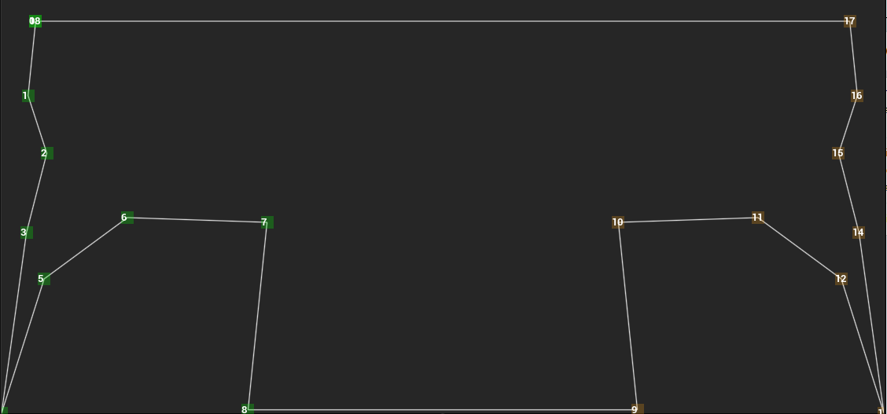

As I am now, like many of my colleagues in the games industry in the UK, a person of leisure. I have begun to work on some projects of my own. It's very liberating to be free of the commercial constraints of an NDA even if the flip side is the lack of income.
One tool I've wanted to write is making extrusions with geometry script easier to do and design. One of the obvious uses of Geometry Script is to take a profile of some kind and extrude it along a spline. For example a Spline Railing or Spline Walls.
UDynamicMesh* UGeometryScriptLibrary_MeshPrimitiveFunctions::AppendSweepPolygon is a Geometry Script function which will take a polygon descriped as an array of FVector2D and sweep it along a path described as an array of FTransform, which is usually taken from slines (or it can be a sequence of locators, which will have to be the subject of a seperate post).
The trouble is generating that array of FVector2D - there are a bunch of utility functions, like FGeometryScriptPolyPath UGeometryScriptLibrary_PolyPathFunctions::CreateCirclePath2D which will create such things for you based on a regular shape.
However, I wanted the option of submitting a hand-edited shape to Geometry Script, and so wanted a polyline editor, and set out to write one in Slate. Below is a screencap of the result in action.

It proved to be easier than I had feared. The API for drawing thigs in Slate Control is a bit of a construction zone in the engine at the moment, with many functions marked deprecated and many controls in the Engine still using the deprecated functions. It looks like a sizable chunk of tech debt for Epic. I have tried to avoid all these where possible and concentrate on good practice.
As this is not really a tutorial (which would be pohibitively long and basically a tutorial about almsot the entirety of Slate) I shall without further ado, present the code as a pair of gists.
Firstly, the Header
[gist:id=29921c9f20ed74be5cf1c4c2df21b8d5]
Secondly, the Body
The implementation of drawing in the OnPaint method turned out to be relatively straightforward, after a bit of trial and error. The drawing region is defined by the FGeometry parameter passed to OnPaint. This can be manuiputated as it is converted into PaintGeometry for rendering, to define areas for boxes and text to be rendered in order to add handles to the vertices in the polyline.
For Layout purposes it was important that the Slate control class was derived from SLeafWidget, so no logic to deal with child widgets was needed. ColourAndOpacity could be a straightforward FLinearColor attribute.
Input could be dealt with by overriding OnMouseButtonUp, OnMouseButtonMove. Many parameters are exposed as an attribue as well as delegates tied to the mouse input functions. Ultimately the points used are held in an array of FVector2f which is also an attribute. One wrinkle in all this is that the control has a flag to signal a closed loop or a mirrored set of points. In the case of mirroring the points array actually only holds half the points and the points actually drawn are computed in the ComputePoints function. At the moment the code that consumes the points array needs to be aware of this. Adding a UFUNCTION that computes all the actual points is probably a good idea and left as an exercise for the reader. As is implmenenting a DOOM Wad Editor in Slate..:-)
After this, the next step was to wrap the Slate Control in a UMG widget. Which will be the subject of the next post. Stay Tuned!